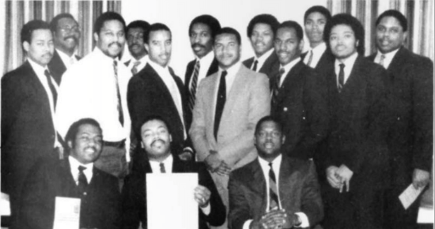
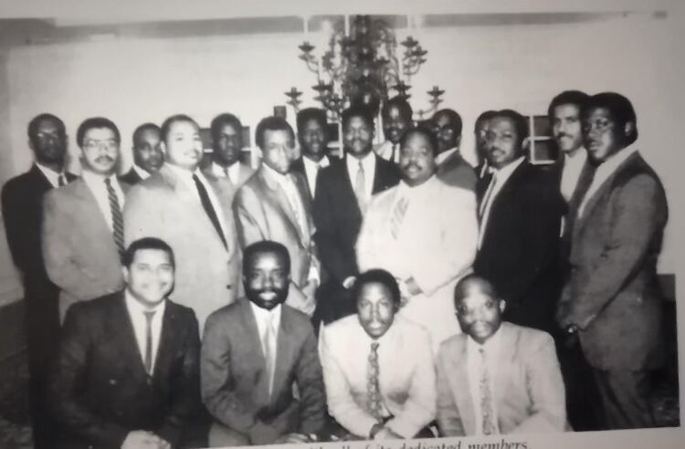

The legacy of Xi Tau Lambda Chapter — 40+ years of leadership, service, and brotherhood in North Dallas.

The Xi Tau Lambda Chapter of Alpha Phi Alpha Fraternity, Inc. was chartered on March 3, 1984, in North Dallas County (Texas), and assigned chapter key #607. North Dallas and the surrounding suburbs were experiencing explosive growth during the early 1980's, driven by rapid business expansion, followed by an influx of young professionals and college graduates.
Needless to say, numerous Alpha men were among the ranks of those fueling the population growth of North Dallas, and with that came opportunities to bring Alpha's dynamic leadership and service to the North Dallas community.
Programs & ServiceShortly after its formation, Xi Tau Lambda Chapter was fully integrated into all levels of the fraternity, with many of its members holding key leadership positions at the state, regional, and national level. The hallmark of the chapter's early success was rooted in the brothers' ability to execute Alpha's national programs, such as Big Brothers/Big Sisters, Project Alpha in conjunction with the March of Dimes, voter registration initiatives, and Go-to-High-School, Go-to-College.
In 1995, Xi Tau Lambda Chapter was one of 15 chapters nationwide to receive a special grant from the W. K. Kellogg Foundation to pioneer a teen male mentoring and rites of passage initiative called the Sankofa Project. To establish ongoing support, the Xi Tau Lambda Foundation was established as a separate non-profit, 501(c)(3) organization.
Arts & CultureXi Tau Lambda Chapter established several local partnerships within the Dallas arts community, including a decade-plus partnership with The Dallas Black Dance Theater, an alliance with Junior Players, and The Black Academy of Arts and Letters.
Twenty-two charter members shared in the excitement and celebration of the newly established Xi Tau Lambda Chapter on March 3, 1984.

22 charter members establish the 607th seat in the House of Alpha on March 3, 1984 in North Dallas County.
One of 15 chapters nationwide selected for a W. K. Kellogg Foundation grant to pioneer the Sankofa Project — a teen male mentoring and rites of passage initiative.
Xi Tau Lambda holds its inaugural Alpha Legacy Celebration, which becomes the chapter's premier annual fundraiser supporting educational goals and programs.
Xi Tau Lambda teams up with Alpha Sigma Lambda Chapter to co-host Alpha Phi Alpha's 93rd Anniversary Convention — the last convention of the 20th century — in Dallas, TX.
Xi Tau Lambda hosts the 54th Texas Council of Alpha Chapters (TCAC) District Convention in Richardson, TX.
Xi Tau Lambda begins mentoring at Scott Johnson Middle School, expanding to Boyd High School in 2021 and John R. Roach Detention Center in 2022.
Xi Tau Lambda celebrates over four decades of leadership, scholarship, and service to North Dallas County and beyond.